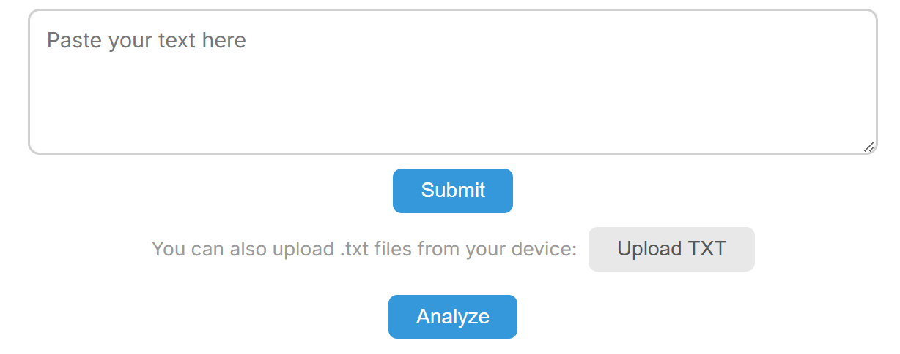

Welcome to Writing Style Analyzer
Welcome! The Writing Style Analyzer is a free tool that helps you understand your writing through data. Paste in a piece of text, and it generates two charts that reveal your sentence length patterns and word frequency habits — the kind of insight that usually takes dozens of hours of manual counting to get.
Here's what the interface looks like:

Using it couldn't be simpler. Copy any piece of writing — an essay, a blog post, a chapter of your novel — paste it into the text box, click Submit, then click Analyze. The charts appear instantly. No sign-up, no download, no fuss.
You can also upload files directly from your computer — just drag and drop a .txt file onto the text area, or use the file picker. This is especially handy when you're working with longer documents or want to skip the copy-paste step.
Now, here's the part people often miss: you're not limited to one article at a time. After submitting your first piece, you can paste again and submit again — the new data overlays on top of the existing charts in a different color. You can also upload multiple files one after another. This lets you compare two, three, or more pieces of writing side by side, all in the same chart. Want to see how your draft compares to your final edit? How your style stacks up against a favorite author? Or how your writing has changed over the years? Just submit them all and the chart will tell the story.
The tool tracks two core metrics. The first chart shows your sentence length distribution — are you a short-sentence sprinter or a long-sentence marathoner? The second shows word frequency — do you lean on a small set of common words, or do you reach for a wider, more varied vocabulary? Together, these two dimensions capture a surprising amount of what we call "writing style."
In the posts that follow, we'll dive deeper into how to interpret the charts, what the numbers really mean, and how to use those insights to become a better writer. For now, the best way to start is simple: grab something you've written, paste it in, and see what happens. The data might surprise you.